Live application, captured 1440×900 @2×, full page, administrator login, Simplified Chinese, dark theme.
Read BRIEF.md for the design ask and tokens.md for the existing token system.
Data is a development fixture — names like “Debug Soul” are test records, and the repeated
audit rows on the dashboard are real output, not a rendering fault.
Main pipeline — soul → judgment → disposition → reincarnation
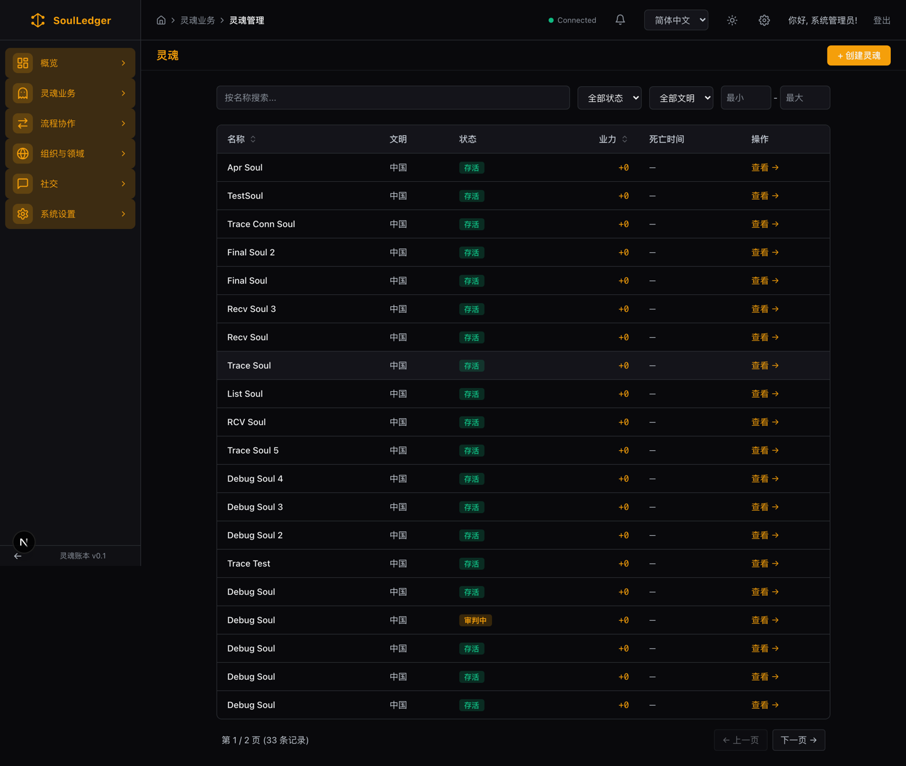
03 · Souls list — no multi-select, one action per row
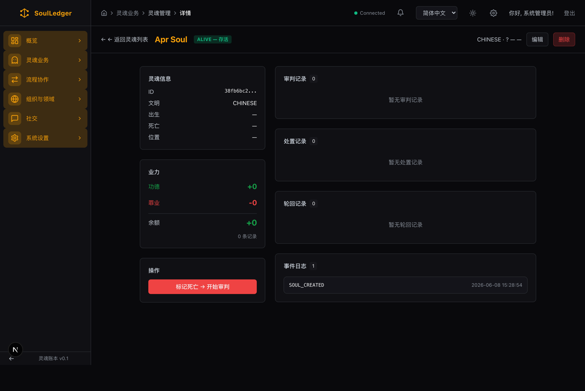
25 · Soul detail — three empty lifecycle boxes, 40% dead space
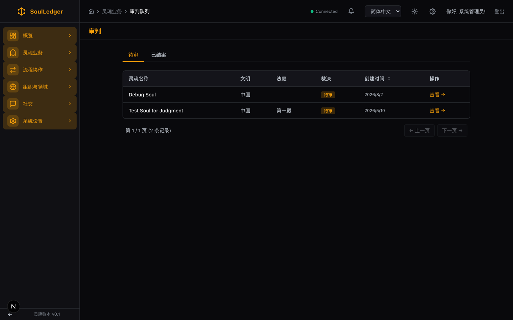
04 · Judgment list
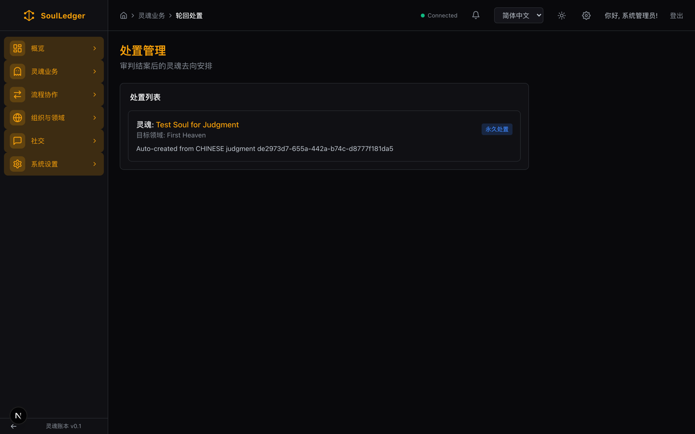
05 · Disposition list
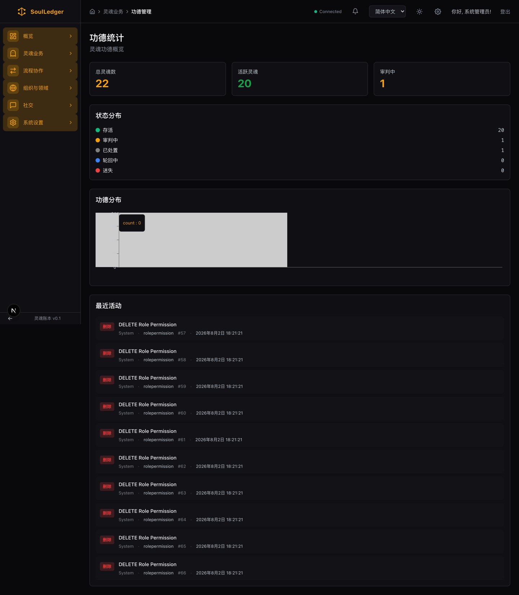
06 · Karma
Cross-civilization
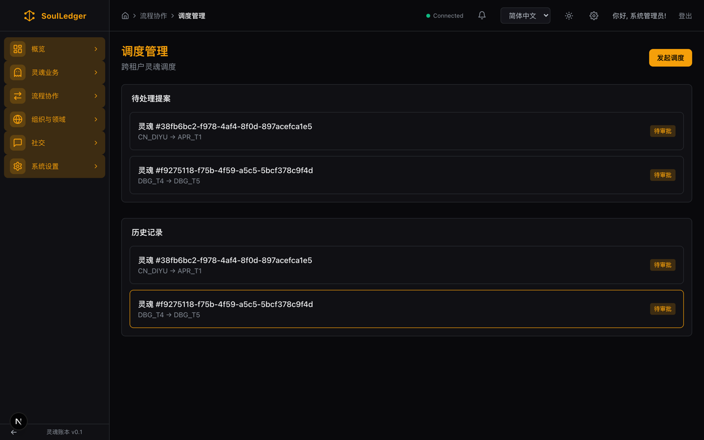
07 · Dispatch
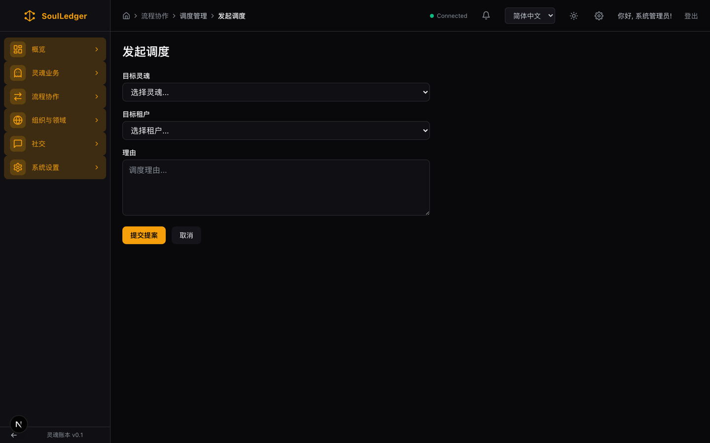
08 · Propose dispatch
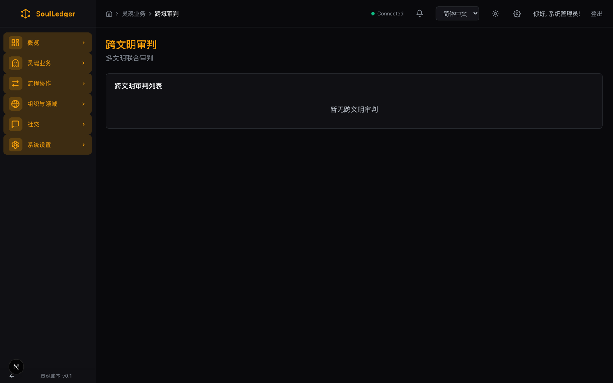
09 · Cross-tenant judgments
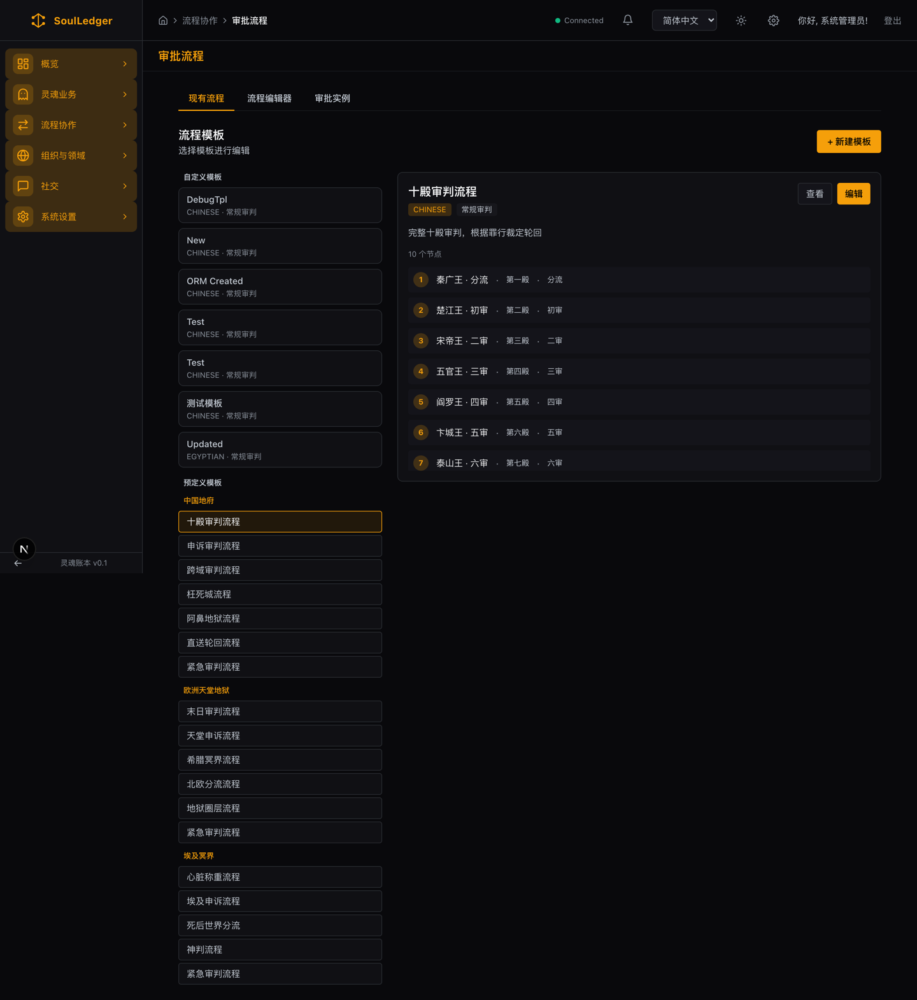
10 · Workflow
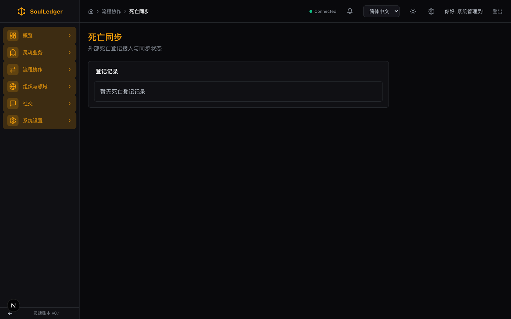
11 · Death sync
Overview — the dashboard collapses on sparse data
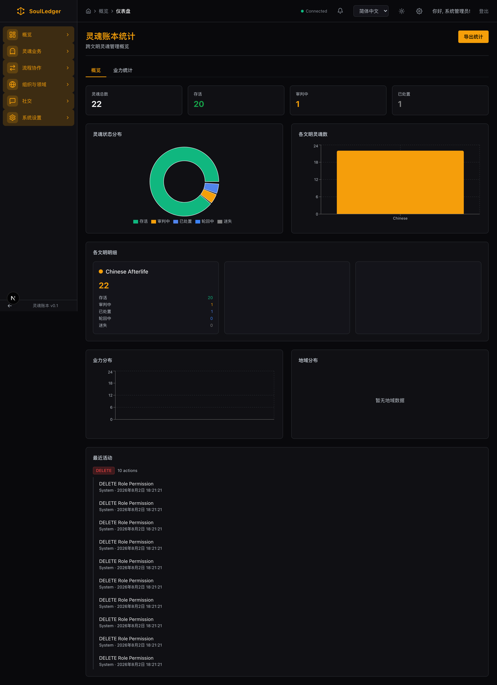
01 · Dashboard — two blank tenant cards, a one-bar chart, an empty plot, ten identical audit rows
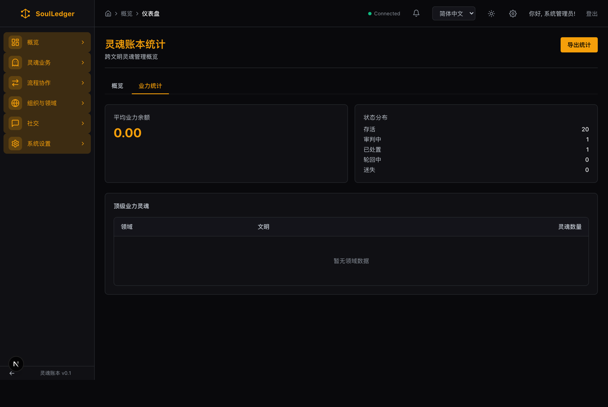
02 · Dashboard, karma tab
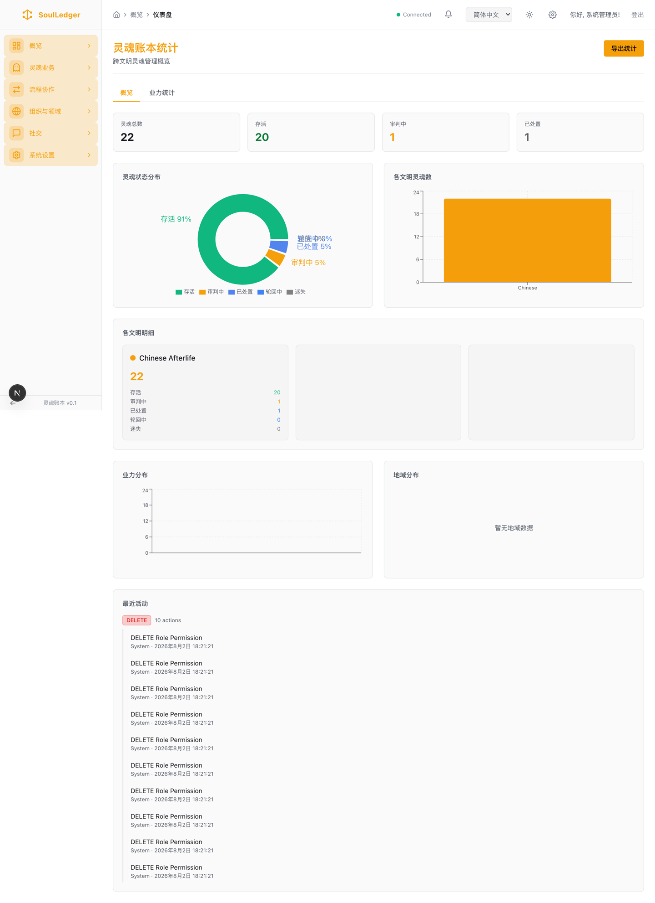
26 · Same screen, light theme — sidebar stays dark, chart chrome stays dark, pie labels collide